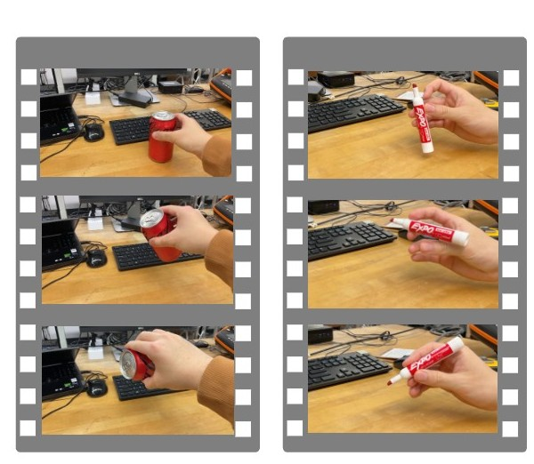
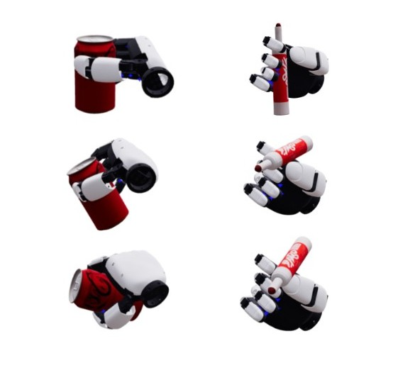
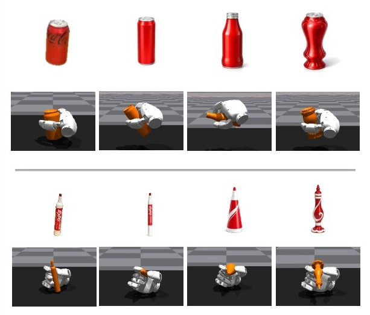
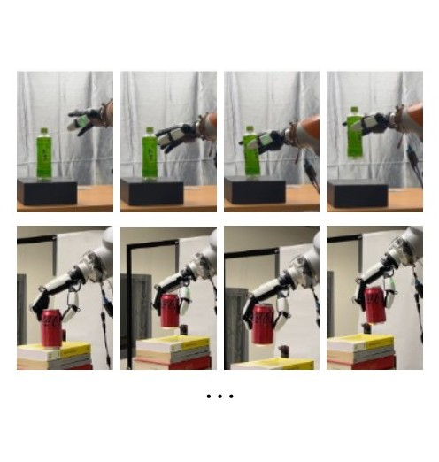
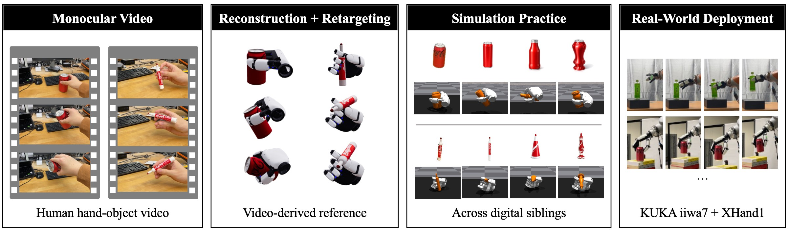
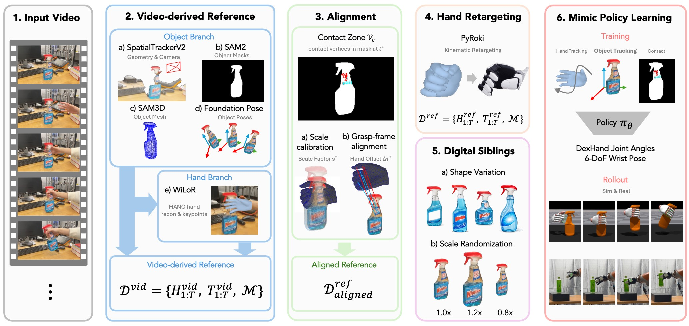
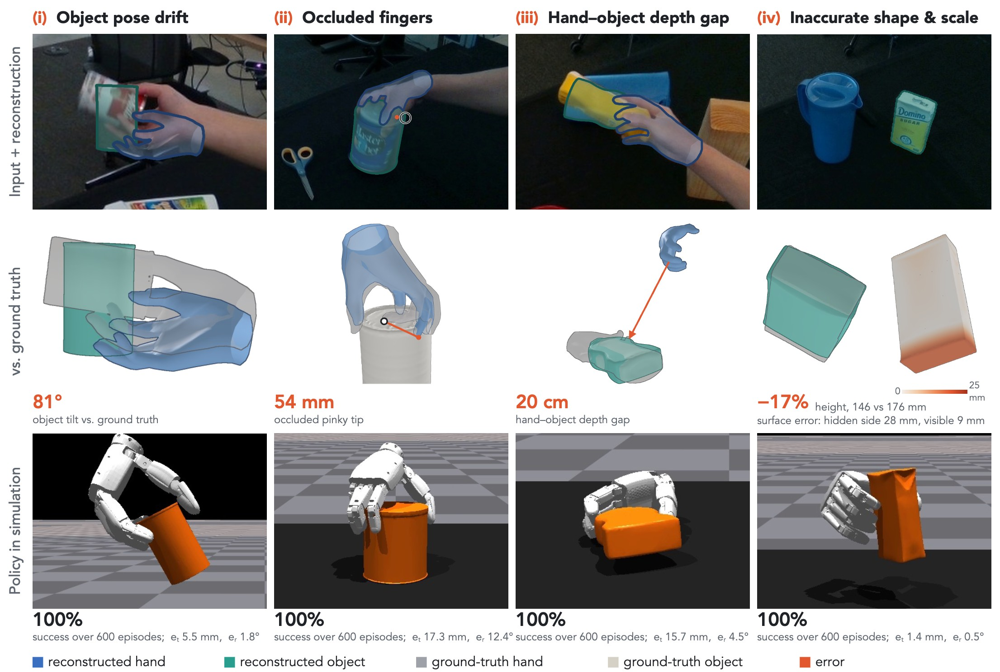
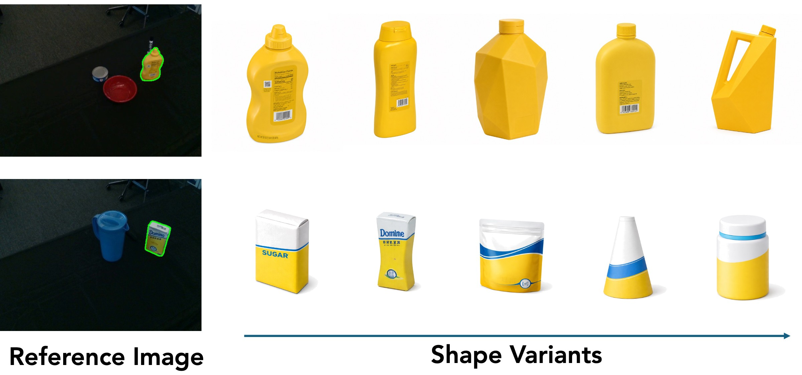
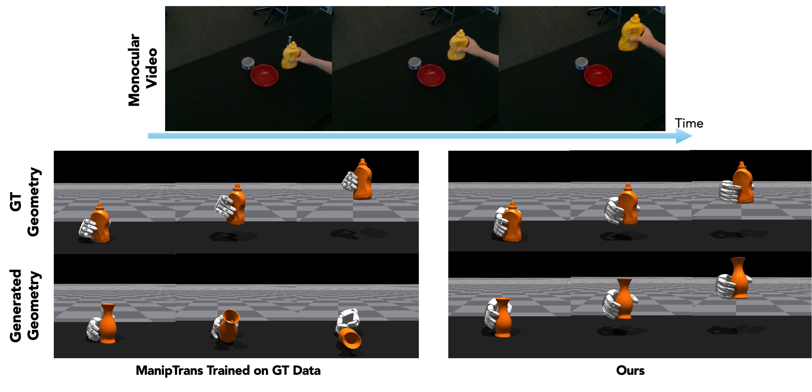
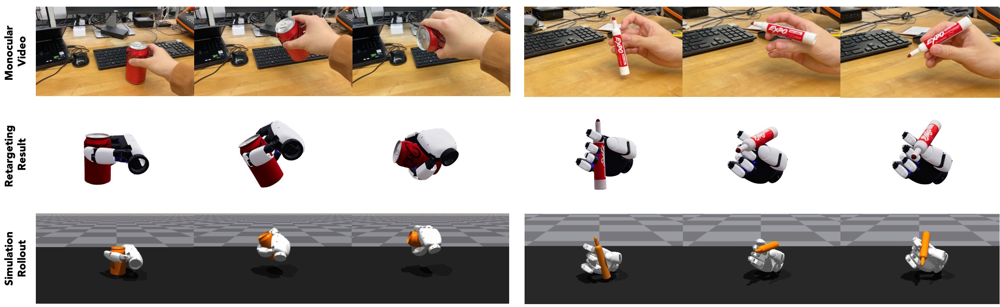

Learning Dexterous Manipulations from Videos
Anonymous Authors
TL;DR: HandMimic learns dexterous manipulation from monocular human videos. It treats the reconstructed hand–object motion as an imperfect reference and practices it with RL in simulation, across digital siblings of the object.





While humans naturally learn dexterous manipulation by watching others and practicing, robotic teleoperation of dexterous hands remains prohibitively expensive and non-trivial. We introduce HandMimic, a framework for learning dexterous manipulation policies directly from real-world monocular videos. We first reconstruct and align the observed hand-object interaction in simulation, while treating the resulting motion as an imperfect reference rather than a physically valid robot demonstration. We then practice in simulation using reinforcement learning to recover physically feasible behaviors from the reconstructed reference. To reduce dependence on a single reconstructed object, we further train across digital siblings with varying geometry and scale. Quantitative experiments show that policies learned from reconstructed references approach those trained from ground-truth references, while digital-sibling training improves generalization to unseen geometry and scale variations. We further validate the resulting motions on a real dexterous robot. Together, these results support using reconstructed human interactions as references for physical practice across varying object geometries.
Even strong monocular reconstruction leaves errors in object pose, metric scale, occluded fingers and unseen geometry. These errors look small in the image but change the contacts that manipulation depends on, and a human hand motion does not directly define a robot hand motion. HandMimic therefore uses the reconstructed and retargeted motion only as a reference, and resolves physical feasibility through policy learning in simulation.

We segment the object with SAM2 and reconstruct its mesh with SAM3D, using camera parameters from SpatialTrackerV2. FoundationPose tracks the object’s 6-DoF pose and WiLoR recovers the MANO hand. Because the hand and object are reconstructed separately, we calibrate scale from hand–object contact and align translation in the grasp frame, which places both in one metric, table-aligned frame.
Reconstruction and alignment for two in-the-wild videos. The object and hand overlays follow the video closely.
Decent, but not perfect. Zoom in on the grasp, though, and the reconstructed fingertips do not touch the object where the real hand does. Even small gaps like these change the contacts that manipulation depends on, so the reconstruction cannot simply be replayed on a robot.
The errors fall into four recurring types. Object pose drift, occluded fingers, a hand–object depth gap, and inaccurate shape and scale. The reconstruction pipeline does not remove them. Instead, HandMimic treats the result as an imperfect reference and lets practice in simulation recover behaviors that reproduce the demonstrated object motion despite them.

PyRoki retargets the aligned MANO trajectory to the dexterous hand. It matches hand geometry while preserving grasp-frame contacts and temporal smoothness. The retargeted motion does not need to be physically executable; it only provides kinematic and object-motion targets for policy learning.
The aligned MANO motion is retargeted to the XHand1 while keeping the object trajectory from the video.
A policy trained on one reconstructed mesh can overfit to its errors. We build a set of digital siblings, the reconstruction plus K generated shape variants, sample one per episode and randomize its scale, so the same reference is practiced across geometries.
so ∼ 𝒰(0.8, 1.2)

The same retargeted hand and object trajectory, replayed on the reconstructed object and on three generated siblings.
Following ManipTrans, a closed-loop RL policy tracks the reference in simulation. The demonstrated object trajectory is the main objective and the retargeted hand is only a kinematic target, so the object term is weighted higher. Hand-tracking early termination is removed after grasp, which lets the policy find feasible contacts instead of copying the retargeted hand.
rt = whandrhand + wobjrobj + wcontactrcontact + rreg, wobj > whand
Policy rollouts in simulation on four digital siblings per video, slowed down 3×.
We evaluate on 28 DexYCB sequences with 8 YCB objects and on 6 in-the-wild iPhone videos. A rollout is successful when the object rotation error ER is below 30° and the translation error ET is below 60 mm. Each DexYCB result is computed over 600 rollouts.
HandMimic gives the best hand–object alignment, posed object geometry and temporal smoothness. Do as I Do has slightly lower PA-MPJPE, which measures local hand articulation only and does not reflect the hand–object interaction.
| Method | PA-MPJPE ↓mm | MRPEobj ↓mm | F5posed ↑% | F10posed ↑% | CDposed ↓mm | Jerk ↓mm/frame³ |
|---|---|---|---|---|---|---|
| DexImit | 5.90 / 5.73 | 126.37 / 75.99 | 15.63 / 12.07 | 28.64 / 24.21 | 180.99 / 21.82 | 6.53 / 5.53 |
| Do as I Do | 3.60 / 3.44 | 81.61 / 69.68 | 14.28 / 15.92 | 28.67 / 33.26 | 25.41 / 20.57 | 3.84 / 3.70 |
| HandMimic (ours) | 3.87 / 3.80 | 60.57 / 39.85 | 22.02 / 22.09 | 42.81 / 45.23 | 16.28 / 13.57 | 0.63 / 0.61 |
Table 1. Hand–object reconstruction on DexYCB, mean / median over 28 sequences. Bold marks the best mean.
With ground-truth demonstrations, HandMimic is comparable to ManipTrans (71.4% vs. 75.7% success). With reconstructed demonstrations, HandMimic keeps 67.8% while ManipTrans drops to 6.0%. When the reconstructed mesh is used as well, HandMimic reaches 85.7% on DexYCB and 83.3% on in-the-wild videos, against 35.4% and 38.5% for ManipTrans. Compared with Do as I Do, it succeeds on 24/28 sequences against 0/28 under our criterion, and 27/28 against 17/28 under theirs.
| Method | Object mesh | DexYCB | In-the-wild | ||
|---|---|---|---|---|---|
| ER (deg) ↓ | ET (mm) ↓ | SR (%) ↑ | SR (%) ↑ | ||
| Ground-truth demonstration | |||||
| ManipTrans | GT | 14.0 | 10.3 | 75.7 | – |
| HandMimic (ours) | GT | 7.6 | 16.0 | 71.4 | – |
| Reconstructed demonstration | |||||
| ManipTrans | GT | 30.9 | 44.7 | 6.0 | – |
| ManipTrans | Reconstructed | 25.3 | 34.8 | 35.4 | 38.5 |
| HandMimic (ours) | GT | 10.5 | 13.6 | 67.8 | – |
| HandMimic (ours) | Reconstructed | 4.6 | 10.1 | 85.7 | 83.3 |
Table 2. Rotation error, translation error and success rate for different demonstration sources and object meshes. Only success rate is available for in-the-wild videos.
Rollouts of ManipTrans and HandMimic from the same reconstructed DexYCB reference, once with the ground-truth CAD model and once with the generated geometry.
We test on held-out real scans from YCB, Google Scanned Objects and OmniObject3D, grouped by normalized Chamfer distance d to the reconstructed mesh. Training on a single reconstructed mesh overfits to it. Scale randomization helps, and training across digital siblings transfers best to new shapes. Retrieved and generated siblings perform similarly, so most of the gain comes from practicing on several geometries rather than from how the siblings are obtained.
| Training geometry | DexYCB | In-the-wild | |||||
|---|---|---|---|---|---|---|---|
| GT scan | Recon. | Closed ≤ 2% | Mediumd ≤ 3.5% | Fard ≤ 10% | Recon. | Held-out | |
| Single reconstructed mesh | 18.0 | 69.3 | 9.8 | 6.4 | 3.5 | 83.1 | 0.0 |
| Scale randomization | 62.1 | 85.6 | 72.5 | 57.3 | 21.6 | 83.3 | 30.7 |
| Retrieved siblings + scale | 67.9 | 85.7 | 81.5 | 72.3 | 40.6 | 83.3 | 36.9 |
| Generated siblings + scale (ours) | 67.8 | 85.7 | 80.3 | 70.2 | 36.6 | 83.3 | 43.3 |
Table 3. Success rate (%) for different training geometries. Both sibling variants use 12 siblings per demonstration with the same scale randomization and training budget.

The six in-the-wild iPhone videos, each a single monocular RGB clip.

We replay the learned motions open-loop on a KUKA iiwa 7 arm with an XHand1 hand. SAM2 segments the target object and FoundationPose estimates its 6-DoF pose from an RGB-D view and the reconstructed mesh, which anchors the simulation frame to the real scene. The simulated rollout is transformed into that frame: the wrist trajectory becomes KUKA joint targets through inverse kinematics, and the hand trajectory maps to XHand1 joint targets.
HandMimic assumes rigid objects with consistent geometry over time, so articulated and deformable objects are not handled directly. The reconstruction pipeline relies on segmentation, pose tracking and hand estimation, which can fail under heavy occlusion, fast motion, symmetry or difficult appearance. These errors can propagate to retargeting and policy learning.